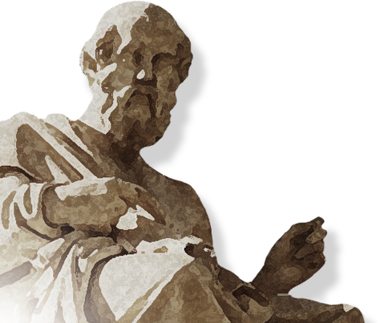

고대 그리스의 대표 철학자
(BC 470 ~ 399)고대 철학은 고대 그리스 – 로마 철학을 총칭합니다. 크게 3기로 나눌 수 있는데, 1기는 최초의 철학자라 일컬어지는 탈레스가 있었던 B.C. 6세기~5세기이고, 2기는 소크라테스, 플라톤, 아리스토텔레스로 이어지는 시기이며, 3기는 A.D. 6세기까지입니다.
소크라테스 이전 고대 그리스의 철학자들은 모두 자연의 방대한 변화를 철학적 탐구의 대상으로 삼았습니다. 대표적으로 '만물의 근원은 물'이라고 주장한 철학의 아버지 탈레스(BC 624~546)가 있습니다.
소크라테스(BC 470-399)는 철학은 결국 인간의 문제라는 점을 분명히 했습니다. 키케로(BC106~43)는 "그는 하늘에 있던 철학을 지상으로 불러온 첫 번째 철학자다"라고 했습니다.
소크라테스의 영향을 크게 받은 제논(BC 335~263)이 창설한 스토아 학파의 금욕주의와 에피쿠로스(BC 341~270)의 쾌락주의도 고대 철학의 대표적인 사조로 꼽힙니다.
『소크라테스의 변론』은 소크라테스가 재판에서 자신을 변호하며 연설한 내용으로,
제자 플라톤이 철학적 스승 소크라테스의 위대한 삶과 영웅적 죽음을 역사에 남긴 작품입니다.
소크라테스는 평생 단 한 권의 책도 집필하지 않았습니다.
오늘날 그를 기억하고 공부할 수 있는 것은 제자 플라톤 덕분입니다.
플라톤은 소크라테스의 사상을 계승하고 발전시키는 일을
가장 중요한 철학적 사명의 하나로 생각했습니다.
이데아론과 이상국가론을 중심으로
철학의 기초를 세운 철학자
서양철학의 심연(深淵)에 다가가기 위해서는 플라톤의
철학을 알아야 하고 플라톤의 철학을 알기 위해서는 『국
가』를 알아야 한다고 말합니다. 『국가』에는 플라톤 철학
에서 가장 유명한 동굴의 비유, 태양의 비유, 선분의 비유
가 등장합니다. 총 10권으로 이루어져 있으며, 형이상학,
존재론, 인식론, 도덕철학, 정치철학, 예술철학 등 플라톤
의 철학세계가 총망라되어 있습니다.

철학사상 최초로 행복을 주제로 논의한 철학자
(BC 384-322)
"정치학은 으뜸가는 학문이며, 윤리학은 그것의 일부" - 『니코마코스 윤리학』 서문 中
아리스토텔레스는 윤리학을 정치학의 일부로 보았습니다. 정의를 실현하기 위해서 인간의 성품도 정의로워질 필요가 있다고 생각했기 때문입니다.
『정치학』의 내용 중에서 가장 중요하면서도 유명한 부분은 “인간은 본성적으로 정치적 동물이다”는 명제입니다.
『니코마코스 윤리학』은 모두 열 권으로, 무릇 인간의 행동은 좋은 것을 실현하려는 목적을 지닌다는 언명으로 시작합니다.